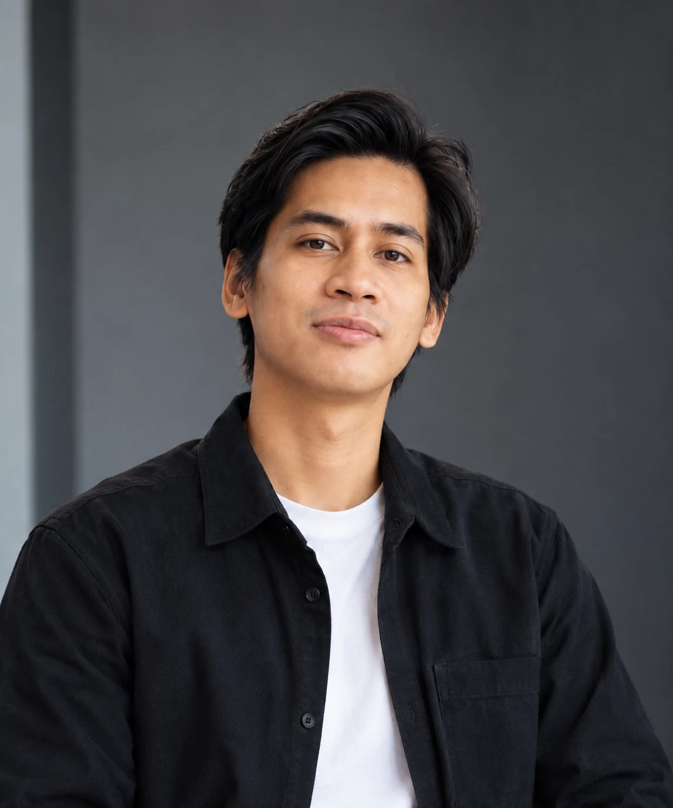

Built from
the field.
Broadcast-rooted creative production professional working across directing, photography, video, events, commercial work and digital creative.

My practice grew from environments where ideas have to survive briefs, schedules, teams, pressure and delivery.
Since 2015, I have worked across camera, program direction, videography, photography, scripting, corporate communications, live events and creative production. Today that practice extends into creative direction, content, digital and business-facing work through independent projects and NUSAKARA CREATIVE.
NUSAKARA is part of my professional practice, not a separate body of work. The distinction I maintain is between what can be documented and what cannot yet be experienced.